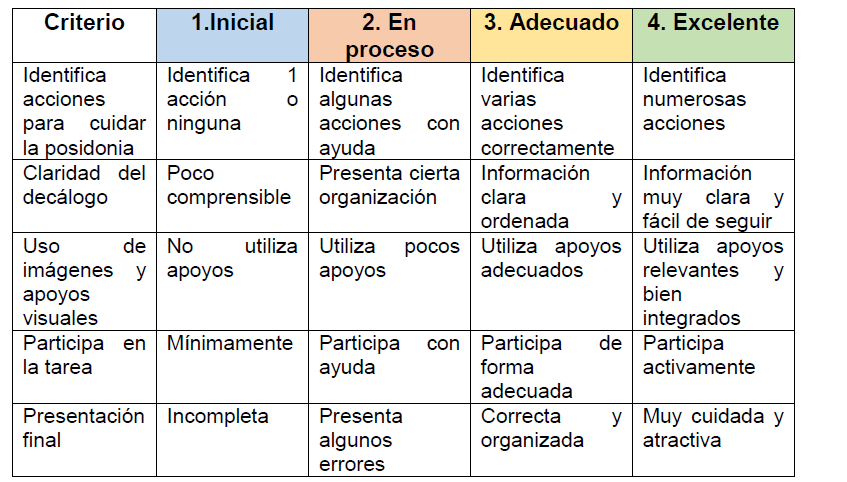
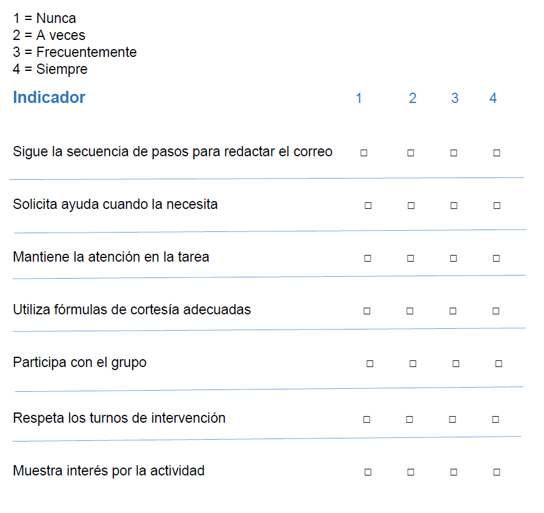

Rúbrica

Escala Estimativa

Pautas DUA en relación a los instrumentos de evaluación
Los instrumentos de evaluación diseñados (rúbrica y lista de cotejo) se han elaborado siguiendo principios del Diseño Universal para el Aprendizaje (DUA), con el objetivo de garantizar la accesibilidad, la equidad y la participación de todo el alumnado.
🔹 Múltiples formas de comprensión
La rúbrica utiliza niveles claros y progresivos que facilitan la comprensión del desempeño esperado.
Se emplea un lenguaje sencillo y estructurado para facilitar su lectura al alumnado de 1º de Primaria.
🔹 Múltiples formas de acción y expresión
Se valora no solo el resultado final, sino también el proceso de participación del alumnado.
Se contemplan diferentes formas de demostrar el aprendizaje (oral, visual, digital y colaborativo).
🔹 Múltiples formas de implicación
Se fomenta la motivación mediante criterios claros que el alumnado conoce previamente.
La evaluación incluye aspectos de participación y trabajo en grupo, favoreciendo la implicación activa.
🔹 Accesibilidad y apoyo
Posibilidad de acompañamiento docente durante el proceso de evaluación.
Adaptación del lenguaje y de las expectativas a la etapa educativa (1º de Primaria).